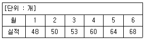

압연기능장 (2014-04-06 기출문제)
1과목: 임의 구분
1. 전동기로부터 피니언과 롤을 연결하여 동력을 전달하는 설비를 무엇이라 하는가?
- 스핀들
- 하우징
- 권취기
- 베어링 상자
(정답률: 91%)

2. 롤의 평행도 불량, 슬래브의 편열 등에 의해 통판 중 판이 한 쪽으로 치우치는 것을 무엇이라 하는가?
- Wedge
- Body crown
- Edge drop
- High spot
(정답률: 91%)
3. 강관의 교정 작업에 사용되는 교정기가 아닌 것은?
- 롤식 교정기
- 만네스만 교정기
- 프레스식 교정기
- 경사롤식 교정기
(정답률: 70%)
4. 열간압연시 판 두께 변동요인은 압연기의 탄성특성변동과 압연재의 소성변형특성변동이 있다. 이 중 압연기의 탄성특성 변동요인이 아닌 것은?
- 유막의 변동
- 롤의 열팽창에 의한 변동
- 압력장력의 변동
- 백업 롤의 편심에 의한 변동
(정답률: 30%)
5. 열연박판용 소재가 로에서 배출될 때 슬래브(slab)의 표면온도는 약 몇 °C정도 인가?
- 700~750
- 900~950
- 1⑤0~1100
- 1250~1300
(정답률: 79%)
6. 직경 250mm의 롤을 사용하여 폭 300mm, 두께 25mm의 연강 후판을 두께 18mm로 압연할 경우 입구측 재료의 속도가 2m/s 일 때 출구측에서 재료의 속도는 약 몇 m/s인가?
- 1.28
- 1.85
- 2.43
- 2.78
(정답률: 67%)
7. 냉간 압연기의 AGC(Automatic Gauge Control)에서 출측 부분에서 측정되는 스트립두께와 Setting 치의 편차를 보상하여 주는 방식은?
- Feed Back AGC(Monitor AGC)
- Feed Forward AGC
- Adoptive Mass Flow
- Gap Control AGC
(정답률: 83%)
8. 냉간압연에서 롤과 판의 접촉면에 대한 마찰을 감소시킬 목적으로 사용되는 압연유에 관한 설명으로 틀린 것은?
- 윤활유는 스트립 표면을 깨끗이 하며 열전도가 좋고 비열이 커야 한다.
- 마찰계수를 적게 하기 위하여 윤활유를 사용하지만 압연속도가 느리면 마찰계수는 작아진다.
- 열간 압연유는 광물유의 베이스에 식물유를 첨가한 순환방식과 팜유를 스프레이(Spray)한 직접방식이 있다.
- 압연유는 판 표면을 깨끗이 하기 위하여 윤활 효과와 판의 변형이나 외부마찰에 의한 열을 냉각하는 효과가 있어야 한다.
(정답률: 80%)
9. 냉연강판 연속 풀림에서 가공성이 우수한 냉연강판을 제조하기 위하여 열간 압연에서 고온 권치를 실시하는 목적이 아닌 것은?
- 탄화물을 응집시켜 냉연 재결정시 C고용을 돕기 위하여
- Al-Killed강에서는 Al을 석출시켜 고용 N을 고정하는 효과 때문에
- 냉간압연전의 결정립을 조대화 하기 때문에
- 최종 사용 목적에 적합하고 적정한 표면 거칠기로 완성한다.
(정답률: 48%)
10. 조질압연의 목적에 대한 설명으로 틀린 것은?
- 형상을 바르게 교정한다.
- 재료에 가공성을 증가시킴과 동시에 강도를 부여한다.
- 재료에 항복점 변형을 일으킨다.
- 최종 사용 목적에 적합하고 적정한 표면 거칠기로 완성한다.
(정답률: 60%)
11. 특수강의 균열에서 균열온도가 아주 낮은 경우 예상되는 현상으로 옳은 것은?
- 압연 및 전단시 부하가 감소한다.
- 부하 변동이 없어 소성 가공이 용이해진다.
- 특수 원소 함유에 따른 변형 저항이 작아진다.
- 변태 온도 구역에 도달하면 변태 응력에 의한 터짐이 생긴다.
(정답률: 87%)
12. 후판 공정에서 가열작업에 대한 설명으로 틀린 것은?
- 균일하게 가열한다.
- 연료소비량 감소를 위해 경제적으로 가열한다.
- 스케일 손실이 적도록 최대한 공기를 많이 사용한다.
- 최적의 품질 및 압연생산능률 향상을 위해 주의 깊게 온도를 조절한다.
(정답률: 92%)
13. 열연 코일상에 발생하는 스케일의 순서가 공기와 접촉하고 있는 부분부터 내부로의 스케일 순서가 옳은 것은? (문제 오류로 보기 지문이 없습니다. 정확한 내용을 아시는 분께서는 오류신고를 통하여 내옹 작성 부탁 드립니다. 정답은 3번입니다.)
- 복원중
- 복원중
- Fe2O3 → Fe3O4 → FeO → Fe
- 복원중
(정답률: 91%)
14. 롤 넥(Roll Neck)의 절손 원인과 가장 거리가 먼 것은?
- 주물의 불량
- 재료의 불량
- 작업온도의 불균일
- 롤 조정 불량
(정답률: 50%)
15. 두께 20mm의 판재를 6mm로 압연하였을 때 압하량과 압하율은 각각 얼마인가?
- 압하량 : 14 mm 압하율 : 70%
- 압하량 : 14 mm 압하율 : 30%
- 압하량 : 6 mm 압하율 : 70%
- 압하량 : 6 mm 압하율 : 30%
(정답률: 86%)
16. 가열로에서 소재표면의 스케일 생성을 억제하는 방법이 아닌 것은?
- 과잉공기를 적에 한다.
- 가열온도를 낮게 한다.
- 재료시간을 길게 한다.
- 가열시간을 짧게 한다.
(정답률: 61%)
17. 열간압연의 일반적인 설명과 관련이 가정 적은 것은?
- 주조조직의 개선 및 기계적 성질이 향상된다.
- 냉간압연에 비해 치수 정도가 매우 우수하며 표면이 미려하다.
- 냉간압연에 비해 저항이 적고 작은 동력으로 커다란 변형을 줄 수 있다.
- 재결정 온도 이상에서 가공하므로 재질의 균일화가 이루어진다.
(정답률: 82%)
18. 다음 중 압연기의 롤당 동력을 구하는 식으로 옳은 것은? (단, F : 압연하중, L : 접촉길이, N : 롤의 회전수)
- (60,000)/(2π×F×L×N)
- (2π×F×L×N)/(60,000)
- (F×L×N)/((2π×60,000)
- (2π×F×L)/(60,000×N)
(정답률: 74%)
19. 롤을 수용하는 견고한 2개의 롤 하우징(Roll Housing)을 무엇이라고 하는가?
- 쵸코(Chock)
- 블록(block)
- 스탠드(Stand)
- 솔 플레이트(Sole plate)
(정답률: 83%)
20. 냉연공정에 사용되는 방청유에 요구되는 기본성질이 아닌 것은?
- 점도
- 탈지성
- 윤활성
- 도포성
(정답률: 60%)
2과목: 임의 구분
21. 강판의 압연과 비슷한 방식으로 성형이 단순하고 작업의 변동이 적으며 고능률, 고실수율을 기대할 수 있는 공형설계 방식은?
- 플랫(flat)방식
- 다이애거널(diagonal)방식 다이아고날
- 스트레이트(straight)방식
- 버터플라이(butterfly)방식 flat평활하다
(정답률: 87%)
22. 주석도금 강판 소재의 조질압연 대신에 20~50%의 냉간압연을 하여 약 2/3로 얇게 하는데 사용되는 압연기는?
- 더블가역식 압연기
- 센지미어 압연기
- 쇼트 압연기
- 5단 가역식 압연기
(정답률: 55%)
23. 전동기로부터 피니언 또는 피니언과 롤을 연결하여 동력을 전달하는 장치로서 연결부분이 밀폐되어 내부에 윤활유를 유지할 수있으므로 고속 압연기에 사용되며 경사각은 2° 이하가 보통이며 스핀들이 대형이거나 긴 경우에는 캐리어로 중간을 유지하는 것은?
- 구동 스핀들
- 연결 스핀들
- 기어 스핀들
- 유니버셜 스핀들
(정답률: 87%)
24. 다음 중 유성압연기의 특징이 아닌 것은?
- 열간이나 냉간에서 압연이 가능하다.
- 작업롤이 2개로 구성되어 있다.
- 1회의 압연비를 90% 정도로 할 수 있다.
- 실수율이 나쁜 재료도 쉽게 압연할 수 있다.
(정답률: 67%)
25. 작은 지름의 롤 이용과 롤 축에 의한 크라운 교정이 유효한 냉간압연기로 데라 압연기라고도 하는 롤의 배치는?
- 2단식
- 5단식
- 6단식
- 다단식
(정답률: 69%)
26. 용탕 등에 황(s)이 고다하게 되면 FeS가 형성되어 균열이 발생하기 쉽다. 이 때 S를 제거 하는데 첨가하는 원소는?
- Cu
- Al
- Mn
- Bi
(정답률: 87%)
27. 고체연료 1kg을 연소시키는데 필요한 과잉공기비가 1.5일 때 실제 공기량 속에 포함된 산소의 량은 약 몇 Nm3인가? (단, 공기 중의 산소의 양은 21% 이며, 이론 공기량은 7.15Nm3이다.)
- 2.25
- 3.25
- 4.25
- 5.25
(정답률: 59%)
28. 열연공장의 전연속식 조압연기의 특징이 아닌 것은?
- 소재를 한 방향으로 연속적으로 작업한다.
- 생산능력을 최대로 한 조압연기의 배열이다.
- 스탠드(stand)의 수가 많고 라인(Line) 길이가 길어진다.
- 강종, 슬래브 두께에 따라 패스회수를 변경하는 등 작업에 유연성이 있다.
(정답률: 63%)
29. 제어압연에 대한 설명이 아닌 것은?
- 조직을 제어한다.
- 압하율을 제어한다.
- 결정립의 크기를 제어한다.
- 다량의 원소를 첨가하여 제어한다.
(정답률: 62%)
30. 냉연강판의 제조공정 순서로 옳은 것은?
- 열연코일 → 냉간압연 → 산세 → 표면청정 → 풀림 → 조질압연
- 열연코일 → 산세 →냉간압연 → 표면청정 → 풀림 → 조질압연
- 열연코일 → 냉간압연 → 산세 → 표면청정 → 조질압연 → 풀림
- 열연코일 → 산세 → 냉간압연 → 표면청정 → 조질압연 → 풀림
(정답률: 80%)
31. 가열로 내의 압력제어를 위해 사용되는 방법은?
- 유량을 증가시킨다.
- 공기량을 증가시킨다.
- 로내 분위기를 조정한다.
- 연도 Damper를 조정한다.
(정답률: 73%)
32. 판재 압연시 빠른 속도로 진행하는 압연재를 일정한 길이로 절단하기 위해 압연 방향을 가로 질러 절단하는 설비는?
- slitter knife
- flying knife
- trimming shear knife
- guillotine shear knife
(정답률: 72%)
33. 압연 공정제어 모델 작업법 중 실적 데이터의 패턴화에 대한 설명으로 틀린 것은?
- 식이 단순하고 계산이 쉽다.
- 실용화가 빠르다.
- 모델화가 쉽다.
- 조업 조건이 변경되어도 새로운 해석이 필요하지 않다.
(정답률: 84%)
34. 압연재가 롤에 물리는 접촉각이 18°이고 압하량이 45mm일 때 롤의 지름은 몇 m인가? (단, cos18° 는 0.95로 계산한다.)
- 800
- 900
- 1000
- 1100
(정답률: 78%)
35. 열연 롤의 일반적인 사용조건으로 고려해야 할 사항 중 틀린 것은?
- 물로 충분히 냉각할 것
- 급격한 열팽창이 일어나지 않게 압연계획을 세울 것
- 국부적으로 집중하중이 장시간 걸리지 않게 할 것
- 크라운이나 테이퍼를 고려치 않고 롤 면을 연삭할 것
(정답률: 91%)
36. 다음 중 로드 셀(load cell)이란 무엇을 측정하는 장치인가?
- 소재의 위치를 검출하는 장치이다.
- 압연력을 측정하는 장치이다.
- 판 두께를 측정하는 장치이다.
- 판 폭을 측정하는 장치이다.
(정답률: 85%)
37. 압연유의 특성 중 시료 1g을 검화하는데 요하는 KOH의 mg 수를 무엇이라 하는가?
- 산가
- 검화가
- 점도
- 염가
(정답률: 60%)
38. 사상압연작업에서 롤 단위 내 편성원칙에 대한 설명으로 틀린 것은?
- 압연이 어려운 치수의 경우 중간 조정재를 편성한다.
- 워크 롤의 마모를 고려하여 광폭재로부터 협폭재로 선정한다.
- 동일 치수에서 강종이 서로 다르면 경한 것에서부터 연한 것으로 편성한다.
- 동칠 치수에서 두께 공차범위의 대소가 있다면 큰 쪽에서 작은 쪽으로 편성한다.
(정답률: 83%)
39. 조질 압연에서 작업 롤의 크라운이 작을 때, 즉 판의 양 끝에 지나치게 압하를 가한 경우 발생되는 결함은?
- 양파
- 중파
- 귀터짐
- 귀접힘
(정답률: 78%)
40. 열간압연시 스트립의 머리부분이 권취기의 각 설비를 통과할 때 스트립의 통판속도와 권취기의 각 부분의 설정속도와의 관계로 옳은 것은? 2
- 핀치롤속도 < 통판속도
- 맨드렐속도 > 통판속도
- 래퍼롤속도 < 통판속도
- 입측테이블속도 < 통판속도
(정답률: 78%)
3과목: 임의 구분
41. 압하 설비 중 유압 압하 방식에 대한 설명으로 틀린 것은?
- 압하의 적응성이 좋다.
- 최적 압하 속도를 쉽게 얻을 수 있다.
- 압연목적에 상관없이 스프링 정수가 일정하다.
- 압연사고에 대한 과대 부하의 방지가 가능하다.
(정답률: 84%)
42. 연료가 연소를 하기 위해서는 연소의 3요소를 충족하여야 한다. 연료가 연소를 시작하기 위한 필요조건으로 옳은 것은?
- 고온 건조시킨다.
- 연료를 분무화시킨다.
- 증발온도 이상으로 가열한다.
- 산소공급과 착화온도 이상으로 가열한다.
(정답률: 62%)
43. 도수분포표에서 도수가 최대인 계급의 대표 값을 정확히 표현한 통계량은?
- 중위수
- 시료평균
- 최빈수
- 미드-레인지(Mid-range)
(정답률: 92%)
44. 다음 중 두 관리도가 모두 포아송 분포를 따르는 것은? 2
- x 관리도, R관리도
- C관리도, U관리도
- np관리도, p관리도
- C관리도, p관리도
(정답률: 67%)
45. 근래 인간공학이 여러 분야에서 크게 기여하고 있다. 다음 중 어느 단계에서 인간공학적 지식이 고려됨으로서 기업에 가장 큰 이익을 줄 수 있는가?
- 제품의 개발단계
- 제품의 구매단계
- 제품의 사용단계
- 작업자의 채용단계
(정답률: 87%)
46. 다음 중 반즈가 제시한 동작경제원칙에 해당되지 않는 것은?
- 표준작업의 원칙
- 신체의 사용에 관한 원칙
- 작업장의 배치에 관한 원칙
- 공구 및 설비의 디자인에 관한 원칙
(정답률: 60%)
47. 전수 검사와 샘플링검사에 관한 설명으로 가장 올바른 것은?
- 파괴검사의 경우에는 전수검사를 적용한다.
- 전수검사가 일반적으로 샘플링검사보다 품질향상에 자극을 더 준다.
- 검사항목이 많을 경우 전수검사보다 샘플링검사가 유리하다.
- 샘플링검사는 부적합 품이 섞여 들어가서는 안되는 경우에 적용한다.
(정답률: 73%)
48. 다음 [표]를 참조하여 5개월 단순이동평균법으로 7월의 수요를 예측하면 몇 개인가?

- 55개
- 57개
- 58개
- 59개
(정답률: 57%)
49. Al 및 Al합금의 특징을 설명한 것 중 옳은 것은?
- 하이드로날륨은 Al에 Si을 첨가한 합금이다.
- 표면에 발생한 산화피막에 의해 내식성이 향상된다.
- Si, Fe, Cu, Ti, Mn 등을 첨가하면 도전율이 상승한다.
- Cu, Mg, Si, Zn, Ni 등의 원소를 넣어 합금한 고강도 Al은 순 Al보다 기계적 성질이 떨어진다.
(정답률: 53%)
50. 철강의 충격 특성에 대한 설명으로 옳은 것은?
- 경정립이 미세하면 천이온도는 올라간다.
- 인장강도가 증가할수록 충격치는 낮아진다.
- 탄소량이 증가하면 천이온도는 낮아진다.
- 압연재는 압연방향(L방향)의 충격치가 가장 낮다.
(정답률: 67%)
51. 알루미늄, 마그네슘 및 그 합금의 질별 기호를 옳게 나타낸 것은?
- O : 어닐링한 것
- w : 제조한 그대로의 것
- H2 : 용체화 처리한 것
- H1 : 고온 가공에서 냉각 후 자연 시효시킨 것.
(정답률: 64%)
52. 연신율이 25% 이고 늘어난 길이가 60cm이었다면 원래의 길이(mm)는?
- 41
- 45
- 48
- 52
(정답률: 63%)
53. 실용되고 있는 형상기억 합금계가 아닌 것은?
- Ti-Ni
- Co-Mn
- Cu-Al-Ni
- Cu-Zn-Al
(정답률: 62%)
54. 은의 성질로 틀린 것은?
- 전성이 좋다.
- 전기전도도가 급속 중에서 가장 크다
- 염산이나 질산 등에 침식되지 않는다.
- 7.5 ~ 10% Cu를 첨가하여 화폐로 사용한다.
(정답률: 83%)
55. 주철의 일반적인 조직에 관한 설명 중 틀린 것은?
- 백주철과 회주철의 혼합조직을 반주철이라 한다.
- 흑연이 많으면 파단면에 시멘타이트가 많이 존재한다.
- 주철 중의 탄소는 유리탄소와 화합탄소형태로 존재 한다.
- 주철 조직과 성질에 C와 Si가 가장 중요한 영향을 미친다.
(정답률: 60%)
56. 공업용 고압가스 용기와 색상 기준의 연결이 틀린 것은?
- 산소-녹색
- 질소-자색
- 아세틸렌-황색
- 수소-주황색
(정답률: 61%)
57. 참모형 안전조직의 특징이 아닌 것은?
- 안전을 전담하는 부서가 있다.
- 100명 이하의 기업에 적합하다
- 생산 부분은 안전에 대한 책임과 권한이 없다.
- 생산라인과의 견해 차이로 안전지시가 용이하지 않으며, 안전과 생산을 별개로 취급하기 쉽다.
(정답률: 69%)
58. 자동화를 하여 얻어지는 효과가 아닌 것은?
- 생산성 향상된다.
- 원자재 비용이 감소한다.
- 노무비가 감소된다.
- 노동인력이 많아진다.
(정답률: 91%)
59. 시퀀스 제어의 요소 중 회로를 개폐하여 시퀀스 회로의 상태를 결정하는 기구는?
- 입력기구
- 출력기구
- 보조기구
- 접점기구
(정답률: 64%)
60. 공정의 변화에 의해 영향을 받는 기본적인 3가지 형태에 해당되지 않는 것은?
- 제한의 변화
- 원자재의 변화
- 모델계수의 변화
- 모델의 구저적인 변화
(정답률: 60%)